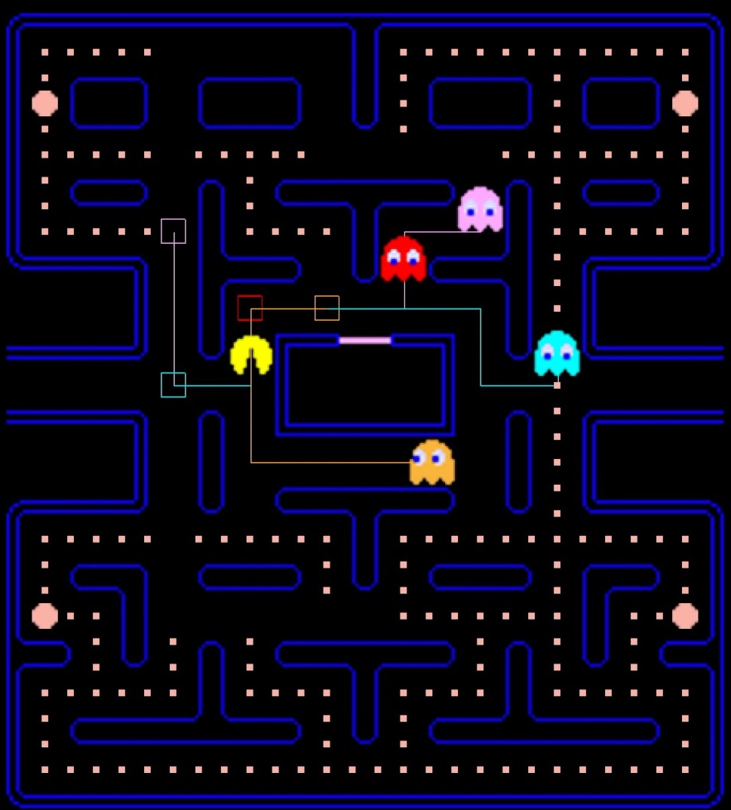
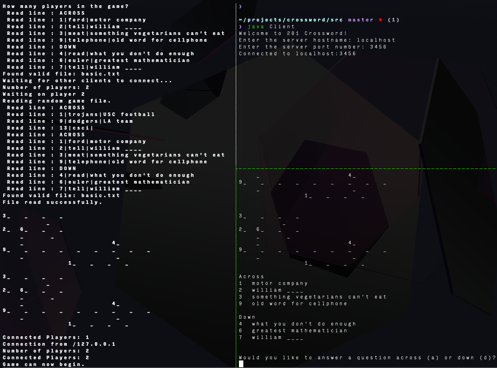

Lightweight Java-based framework for data and cache
validation to support Amazon's Seller Central page.
The MagicWand tool has improved customer satisfaction by
lowering issue resolution time by 49% and lowering ticket
reassignment rate by 30%. Improved internship team's ticket
score from low 30's in June to high 80's in October.
Languages & Tools: Java, Spring, Javascript, Python
Implemented kernel level threads, multi-level feedback queue scheduler,
copy-on-write optimization, and a filesystem extension on vanilla xv6 for USC's
Operating Systems course.
Created a Docker container used by classmates to improve development
experience.
Languages & Tools: C, x86 assembly, make, qemu
Containerized leaderboard web-app for live-updating player rankings with custom
user authentication and player statistics.
Languages & Tech: Node.js, Java, Redis, Docker, React
Multi-platform clone of the popular arcade game PacMan
with ghost AI strategies, built to play on desktop.
(contact me for code! we're not allowed to share publicly)
Written in C++ with SDL2 graphics library.

Crossword puzzle generator and platform for networked,
multi-player game with command line interface.
Language: Java

Cross-platform app for USC dining hall menus with
web-scraping scheduler and cloud database backend. My
contribution included writing the scheduled web-scraper,
endpoint to access menu data, and managing deployment on
Google Cloud Platform.
Languages & Tech: Java, Spring Boot, Google CloudSQL, Python, React Native.